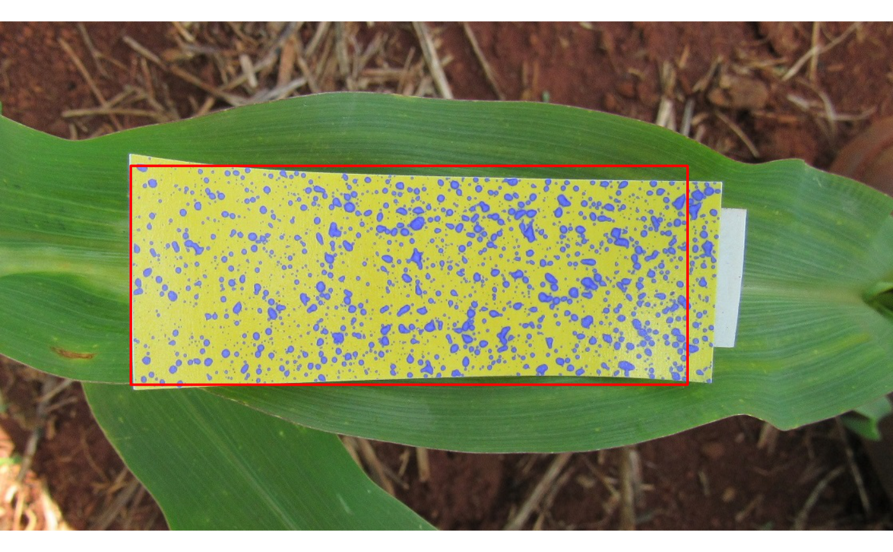

Evaluate the spray quality by analyzing an RGB-image of the water-sensitive paper.
Usage
analyzePaper(x, paper_dim = c(76, 26), distance = 0.7, display.it = TRUE)Arguments
- x
Either an object of class
Imagefrom package EBImage or a character indicating the path to the image file (.jpg, .jpeg, .png, .tif).- paper_dim
A numeric vector of length 2 indicating the length and width (in mm) of the water-sensitive paper.
- distance
A numeric value indicating the distance from the nozzle(s) to the target, in order to estimate the spray drift (%) using the 'German model' for field crops.
- display.it
(Logical) Should the image with the bounding box of the paper be displayed? Default is
TRUE.
Value
Am object of class hydropaper, consisting of a list
of the following:
- ndrops
An integer indicating the number of droplets found.
- coverage
The percentage of wet area of the paper.
- density
The number of droplets per squared centimeter.
- vol
The volume of product deposited in the paper. If
paper_dimis given in milimeters, thenvolis given in microliters.- vol_ha
The extrapolation of volume deposited for one hectare. If
paper_dimis given in milimeters, thenvol_hais given in L/ha.- md
The mean diameter of droplets. If
paper_dimis given in milimeters, thenmdis given in micrometers.- nmd
The numeric median diameter of droplets. If
paper_dimis given in milimeters, thennmdis given in micrometers.- vmd
The volumetric median diameter of droplets. If
paper_dimis given in milimeters, thenvmdis given in micrometers.- d1
The 10th percentile of the volumetric median diameter of droplets. If
paper_dimis given in milimeters, thend1is given in micrometers.- d9
The 90th percentile of the volumetric median diameter of droplets. If
paper_dimis given in milimeters, thend9is given in micrometers.- RA
The relative amplitude:
(d9 - d1)/vmd.- maxdrop
The maximum diameter of droplets. If
paper_dimis given in milimeters, thenmaxdropis given in micrometers.- mindrop
The minimum diameter of droplets. If
paper_dimis given in milimeters, thenmindropis given in micrometers.- size_class
The percentage of droplets in each of the following three classes of diameter: <200, 200-400, >400 micrometers.
- CVa
The coeficient of variation (%) of droplet areas.
- CVd
The coeficient of variation (%) of droplet diameters.
- r
A character giving a naive recomendation of which products are suitable to be sprayed, based on
density.- drift
A prediction of drift (%) based on the 'German model' for field crops (Rautmann et al., 2001), as function of
distance. This quantifies a 90th percentile of the drift values.- areas
A numeric vector containing area of each droplet found. If
paper_dimis given in milimeters, thenareasis given in squared milimeters.- diams
A numeric vector containing the diameter of each droplet found. If
paper_dimis given in milimeters, thendiamsis given in squared micrometers.- binary
The binary mask of the segmentation, a numeric matrix.
References
Rautmann, D., M. Streloke, R. Winkler (2001) New basic drift values in the authorization procedure for plant protection products. In: R. Forster & M. Streloke, Workshop on Risk Assessment and Risk Mitigation measures in the context of the authorization of plant protection products (WORMM) 27.-29. September 1999. Mitteilungen aus der Biologischen Bundesanstalt für Land- und Forstwirtschaft, Berlin-Dahlem, Heft 381. 2001. 133-141.
Examples
path <- system.file('images', 'field1.jpg', package = 'hydropaper')
p1 <- detectPaper(path)

a <- analyzePaper(p1)
#> Error in watershed(distm, tolerance = 0.6, ext = s): 'ext' must be a positive integer
print(a)
#> Error: object 'a' not found
plot(a)
#> Error: object 'a' not found